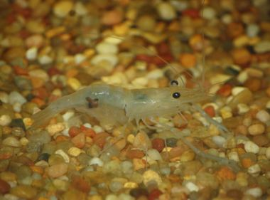
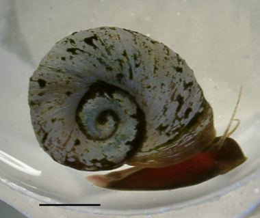
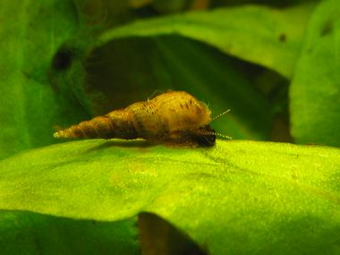

Skip to content
अवध जैव विविधता एटलस
Awadh Biodiversity Atlas
This month
All species
About
Snails, crabs & prawns
घोंघे और केकड़े
10 species of the Basti–Ayodhya countryside.
घोंघा
Freshwater Apple Snail
Pila globosa

छोटा झींगा
Freshwater Grass Shrimp
Macrobrachium lamarrei
घोंघे और केकड़े
सीप
Freshwater Mussel
Lamellidens marginalis
घोंघे और केकड़े
मीठे पानी का घोंघा
Freshwater Pond Snail
Lymnaea acuminata
घोंघे और केकड़े
गंगा झींगा
Ganga River Prawn
Macrobrachium gangeticum
घोंघे और केकड़े
केकड़ा
Guerin's Freshwater Crab
Barytelphusa guerini
बगीचे का घोंघा
Indian Land Snail
Macrochlamys indica
घोंघे और केकड़े
खेत का केकड़ा
Jacquemont's Field Crab
Paratelphusa jacquemontii

चपटा घोंघा
Ramshorn Snail
Indoplanorbis exustus

जल घोंघा
Red-rimmed Melania
Melanoides tuberculata